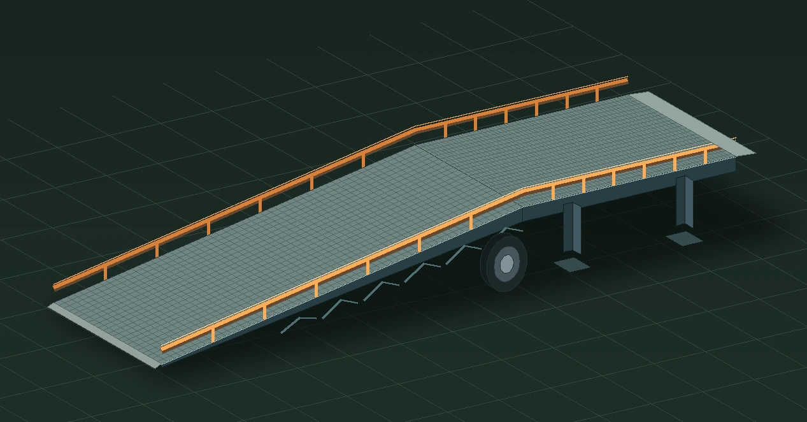
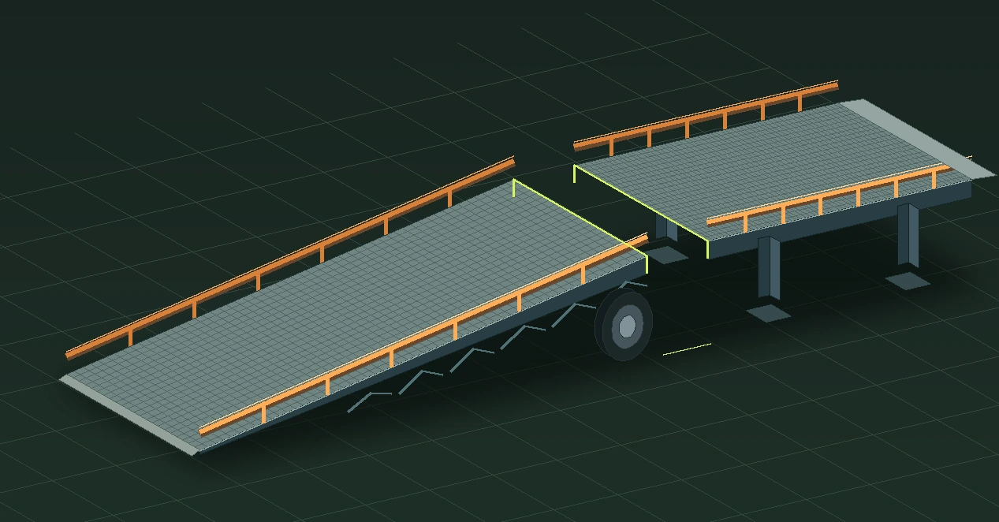

PRODUCT LINEUP
하중별 모델 찾기
DCQY 시리즈의 정격 하중을 선택해 모델을 확인하세요.
CONFIGURATIONS
작업 환경에 맞는 구조

두 부분으로 나누는 주문형 설계 예시입니다. 제작 가능 여부와 연결 방식은 현장 조건에 따라 확인합니다.
FIELD VIDEOS
이동식 도크 작동 영상
PROJECT INQUIRY
견적 문의서 작성
희망 모델과 현장 조건을 담은 문의 문안을
작성하고 복사할 수 있습니다.